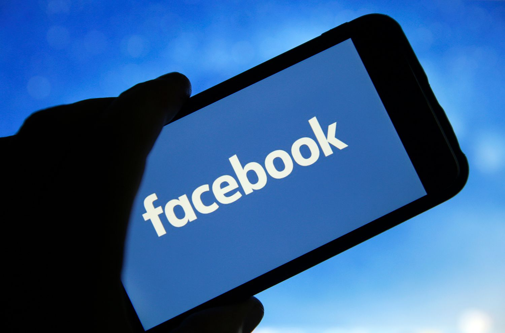
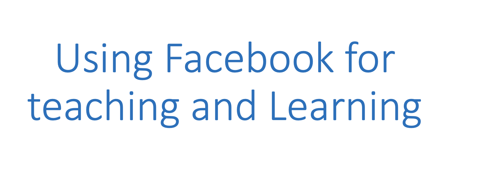

Facebook is the largest social media network in the world, with around 2.5 billion monthly users. It is a platform that offers you a space online to share photos, videos and updates on your daily life. People create profiles on facebook, which can be personal or non-personal, which then allows them to form relationships with others online. Facebook can be used on your phone, Laptop or pretty much any device with a connection to the internet. It is used as a form of entertainment for many, as people post videos and share stuff about their daily lives.

Social Media applications were not specifically designed for educational purposes, however it has the potential to further education inside a classroom. Facebook is most appropriate for discussing and sharing world news and major events. The main reason Facebook is used is to connect with friends, family etc. While Facebook is mainly used to connect with people you already know it can also be a great tool for networking. Facebook creates a sense of community amongst its users and this can lead to a widespread of ideas and collaborations. Similar to creating an online community Facebook can be used to strengthen communication. Students and teachers and students and their peers are now able to share and join their work together easier than ever. Students can now communicate with their classmates and teachers about their course content, besides from this they can also arrange times to work on group
projects.Another way Facebook can be used for teaching and educational benefits is the development of computer skills. Students are developing writing and communication skills through self-expressing posts as well as several other skills such as editing and proofreading.